Milestone 1
Problem
Organizarea unei nunți este un proces complex, care poate dura până la un an și implică numeroase decizii și detalii. Cuplurile petrec ore întregi căutând furnizori, comparând oferte și încercând să gestioneze bugetul, lista de invitați și programul. În lipsa unei platforme centralizate, mulți apelează la organizatori profesioniști, însă costurile ridicate, de peste 2000 euro, nu sunt accesibile tuturor.
Solution / Value Proposition
Solutia noastră este Nuvio o platformă web care acționează ca un organizator personal de nunta. Utilizatorii pot planifica întregul eveniment într-un singur loc, cu acces la furnizori, buget, invitații, programul zilei și articole utile.
- Vizualizare furnizori disponibili (restaurante, fotografi, DJ etc.) și portofolii cu recenzii.
- Creare program de nunta conectat la Google Calendar.
- Generare și trimitere invitații personalizate.
- Gestionare buget și acces la ghiduri utile.
Customer Segments
- Cupluri proaspăt logodite care vor să economisească timp și bani.
- Furnizori de servicii pentru evenimente, care își pot promova ofertele și gestiona programările.
Competition
Competiția principală o reprezintă organizatorii tradiționali de nunți, care oferă servicii complete, dar costisitoare.
Pe piața românească există câteva platforme asemănătoare, precum SmartWedding, WeSmart și Bridal. Dintre ele, WeSmart este cea mai apropiată de conceptul nostru, oferind funcții similare de organizare și gestionare a furnizorilor.
Totuși, Nuvio își propune să meargă mai departe printr-o integrare completă: sincronizare cu Google Calendar, invitații personalizate și o interfață modernă, care aduce toate funcționalitățile într-un singur loc.
Competitive Advantage
- Costuri mult mai mici pentru utilizatori.
- Centralizarea tuturor furnizorilor și serviciilor într-un singur loc.
- Accesibilitate permanentă, oricând și oriunde.
- Disponibilitate și programare în timp real fără telefoane inutile.
Key Metrics
Ne propunem ca în primul an de la lansare să atingem un număr de 100 de utilizatori activi și cel puțin 50 de furnizori înregistrați pe platformă.
Cost Structure
- Dezvoltarea și mentenanța platformei web.
- Costuri de hosting și baze de date.
- Marketing online și promovare.
- Suport tehnic și actualizări periodice.
Revenue Streams
- Abonamente premium pentru furnizori pentru creșterea vizibilității.
- Comisioane mici pentru rezervările efectuate prin platformă.
Milestone 2
1. Cum am identificat problema
Organizarea unei nunți este un proces complex, solicitant și de durată, care implică numeroase decizii: alegerea locației, a furnizorilor, gestionarea bugetului, trimiterea invitațiilor și coordonarea programului. Din observațiile noastre, multe cupluri încep pregătirile chiar și cu 1–2 ani înainte de eveniment, iar stresul acumulat provine din multitudinea de factori de luat în calcul și din lipsa unui instrument centralizat care să le ușureze munca.
Pe lângă volumul mare de decizii, un alt obstacol important îl reprezintă comunicarea cu furnizorii: fiecare are propriile canale (Facebook, WhatsApp, e-mail, telefon), iar urmărirea ofertelor, contractelor și plăților devine dificilă. Organizatorii profesioniști pot ajuta, dar sunt adesea inaccesibili din punct de vedere financiar, costurile depășesc frecvent 2000–2500 EUR, lucru care nu este fezabil pentru toate cuplurile.
Un alt factor pe care l-am observat este lipsa de timp: oamenii moderni, mai ales cei care lucrează full-time, preferă soluții digitale care să economisească efort și să centralizeze informația. De aici a venit ideea unei platforme care să integreze toate aceste nevoi.
Sursele care ne-au ajutat în identificarea problemei:
- Discuții informale cu prieteni și membri ai familiei care s-au căsătorit recent sau urmează să o facă.
- Observarea directă a procesului lor de organizare: cât a durat, ce dificultăți au întâmpinat și cum au gestionat situațiile neprevăzute.
2. Ce credem că este soluția
Pe baza problemelor identificate în etapa anterioară, soluția propusă este o platformă digitalizată care simplifică și eficientizează procesul de organizare a unei nunți. Această platformă, denumită Nuvio, acționează ca un organizator digital complet, menit să ofere cuplurilor control, claritate și economie de timp, fără a apela la un organizator profesionist costisitor.
Prin Nuvio, utilizatorii vor putea planifica întregul eveniment într-un singur loc, beneficiind de următoarele funcționalități principale:
- Acces la furnizori verificați, cu portofolii, prețuri afișate transparent și recenzii reale, astfel încât cuplurile să poată compara și alege ușor.
- Comunicare directă între utilizator și furnizor, prin intermediul platformei, în funcție de disponibilitatea ambelor părți — fără apeluri sau mesaje pe WhatsApp ori Facebook.
- Gestionarea completă a bugetului în cadrul aplicației — fără fișiere externe, notițe sau tabele în Excel. Utilizatorii pot urmări plățile, avansurile și cheltuielile rămase într-un mod automat și centralizat.
- Crearea și trimiterea invitațiilor digitale personalizate și evidență a participanților.
- Articole și ghiduri utile, care oferă recomandări despre alegerea rochiei, tradițiile de nuntă, organizarea eficientă a evenimentului și alte detalii importante pentru miri. Astfel, nicio tradiție nu va fi omisă.
- Sugestii personalizate de planificare, bazate pe calendarul evenimentului, pentru ca utilizatorul să știe în ce ordine și când trebuie realizate diferitele etape ale organizării.
- Baza de furnizori largă — nu doar pentru servicii majore (local, fotograf, DJ), ci și pentru aspecte secundare precum flori, decoruri, candy-bar sau alte detalii ce aduc unicitate evenimentului.
Prin toate aceste funcționalități, Nuvio își propune să devină un asistent digital complet, care oferă o experiență integrată, modernă și accesibilă. Costul de utilizare va fi semnificativ mai mic decât cel al unui organizator profesionist, permițând astfel cuplurilor să-și gestioneze singure nunta, într-un mod ordonat, clar, rapid și fără stres.
3. Planul pentru Customer Discovery
Pentru a valida problema și a înțelege dacă soluția noastră răspunde unei nevoi reale, ne-am propus să discutăm cu ambele categorii implicate direct în procesul de organizare a unei nunți: mirii și furnizorii de servicii.
În ceea ce privește mirii, am intervievat mai multe persoane care au avut deja nunta recent, pentru a înțelege mai bine cum a decurs procesul de organizare, ce dificultăți au întâmpinat și cum și-au gestionat timpul și bugetul. Aceste discuții ne-au ajutat să identificăm principalele probleme legate de organizarea evenimentului: timpul mare necesar planificării, stresul cauzat de coordonarea furnizorilor, lipsa unei evidențe clare a cheltuielilor și nevoia unei soluții mai simple și centralizate.
În paralel, am început să contactăm furnizorii de servicii (fotografi, DJ, restaurante, decoratori etc.) pentru a afla cum percep ei procesul de comunicare cu mirii, cât timp pierd în comunicarea cu clienții, dacă întâmpină dificultăți în gestionarea rezervărilor. Am trimis mai multe mesaje și e-mailuri introductive, însă până în acest moment nu am primit răspunsuri concrete. Următorul pas este să continuăm procesul de validare și în format fizic, prin discuții directe, pentru a obține feedback detaliat despre interesul și disponibilitatea lor de a colabora.
4. Procesul
1. Identificarea segmentelor de clienți
În prima etapă, ne-am concentrat pe identificarea segmentelor de clienți pentru proiectul nostru. Am pornit de la premisa că organizarea unei nunți implică două categorii principale: mirii, care sunt direct responsabili de coordonarea tuturor aspectelor evenimentului, și furnizorii, care oferă serviciile necesare (restaurante, florării, cofetării etc.) și se confruntă cu dificultăți în gestionarea cererilor și comunicarea cu clienții. Am considerat că, pentru a valida problema și pentru a înțelege realitatea procesului, trebuie să obținem perspective atât din partea mirilor, cât și din partea furnizorilor, deoarece doar așa putem verifica dacă nevoile pe care le-am presupus inițial corespund experiențelor reale.
2. Cum am ajuns la clienți și metodele folosite
Pentru mirii intervievați, am identificat persoane care au avut nunta recent, astfel încât informațiile să fie actuale și relevante. Am realizat două interviuri online, prin mesaje scrise, în care discuțiile au fost structurate, dar lăsate și deschise pentru detalii spontane, și un interviu fizic, în cadrul unei nunți de aur, unde participanții ne-au împărtășit experiența lor completă despre organizarea evenimentului.
Pentru furnizori, am redactat și trimis un e-mail personalizat către mai multe tipuri de servicii (restaurante, florării, cofetării, DJ), explicând scopul proiectului și solicitând disponibilitatea pentru un scurt interviu. Mesajele au fost adaptate în funcție de specificul fiecărei categorii și pot fi regăsite aici.
3. Colectarea informațiilor
Interviu cu Cuplul 1
Participanți: Mirii care și-au organizat nunta recent. Interviu online scris.
- Q1: Cum ați început să vă organizați nunta?
R1: Cam la o lună după cererea în căsătorie am început să ne facem un plan despre nunta, locație, perioada în care ne-ar plăcea. Am început prin a căuta restaurante, la început doar online (ne uitam la poze, citeam recenzii), apoi am mers și fizic să vedem câteva. În paralel, căutam pe net și întrebam alți prieteni cum au planificat ei nunta, dacă ne pot oferi ceva tips & tricks. După ce am stabilit data și locația, am început să sunăm alți prestatori de servicii de pe lista noastră (cel mai greu a fost să găsim DJ-ul dorit). Totodată, stabilisem cam care ar fi bugetul nostru. - Q2: Ce a fost cel mai greu de gestionat?
R2: A fost greu de gestionat stresul că nu vom reuși să găsim prestatorii doriti (am avut la dispoziție 6 luni să ne pregătim pentru că așa rezervasem la restaurant). - Q3: Ce a mers bine în procesul de organizare?
R3: Am avut doar o situație neprevăzută, care s-a rezolvat rapid. În rest, totul a decurs bine. - Q4: Cum țineți evidența ofertelor, contractelor și plăților? (Excel, notițe, WhatsApp, altceva?)
R4: Țineam evidența în Excel. Am făcut o listă cu toți prestatorii deja stabiliți și cu care am semnat contractul, am trecut suma avansului oferită și cât ne mai rămânea să achităm. - Q5: Cum ați stabilit bugetul pentru nuntă?
R5: Am stabilit bugetul în funcție de câți bani aveam puși deoparte și de cât ne permiteam să cheltuim în total. Am dat avansurile inițiale, după care restul sumei pentru toți prestatorii am plătit-o din darul de la nuntă. - Q6: Ce tip de servicii v-au costat mai mult decât vă așteptați?
R6: Cu siguranță localul ne-a costat cel mai mult, mai mult decât ne așteptam.
Findings: Procesul de organizare a fost fragmentat și stresant, mai ales din cauza timpului limitat și a dificultății de a găsi furnizorii potriviți. Mirii folosesc metode manuale (Excel, notițe) pentru evidență. Prioritizarea și planificarea din timp ajută, dar lipsa unei platforme centralizate face procesul mai greu decât ar fi necesar. Bugetul este gestionat manual și ajustat pe parcurs, deci o soluție care să urmărească cheltuielile și să ofere previziuni ar fi utilă. Furnizorii mari (de exemplu locația) sunt cei mai costisitori și dificil de rezervat.
Interviu cu Cuplul 2
Participanți: Mirii care și-au organizat nunta recent. Interviu online scris.
- Q1: Cum ați început să vă organizați nunta?
R1: Am început pregătirile cu un an înainte. Primul pas a fost să găsim o locație disponibilă, un fotograf și o formație care să poată presta în acea zi. După ce am asigurat aceste aspecte, am creat o listă în ordinea priorităților: decor, rochie, costum, meniu, invitații etc. - Q2: Ce a fost cel mai greu de gestionat?
R2: Cel mai greu a fost menținerea unei bune organizări, având în vedere că sunt multe tradiții ce trebuie respectate la o nuntă și este ușor să scapi din vedere anumite detalii. Respectarea bugetului a fost, de asemenea, dificilă, deoarece apar mereu cheltuieli neprevăzute: cadouri, surprize, costuri finale. - Q3: Ce a mers bine în procesul de organizare?
R3: Faptul că am început din timp ne-a ajutat enorm, deoarece am putut compara toate opțiunile de preț și diferitele oferte, fără a lua decizii impulsive. - Q4: Cum țineți evidența ofertelor, contractelor și plăților? (Excel, notițe, WhatsApp, altceva?)
R4: Folosim o agendă în care am notat toate cheltuielile, termenele de plată, datele importante și orele. - Q5: Cum ați stabilit bugetul pentru nuntă?
R5: Bugetul l-am făcut în funcție de cerințele furnizorilor și l-am adaptat în funcție de nevoi. Am investit mai mult în aspectele care contau cu adevărat, de exemplu meniul și muzica, și am redus cheltuielile în zonele mai puțin importante, cum ar fi decorul. - Q6: Ce tip de servicii v-au costat mai mult decât vă așteptați?
R6: Nu am avut servicii care să ne coste mai mult decât ne-am așteptat.
Findings: Începerea planificării din timp ajută foarte mult, dar procesul rămâne complex, mai ales din cauza tradițiilor și a detaliilor multiple care trebuie respectate. Evidența manuală în agendă funcționează, dar poate fi ineficientă, mai ales dacă se gestionează mai multe oferte și plăți simultan. Ajustarea bugetului este un proces dinamic și poate fi stresant pentru miri. Compararea ofertelor și luarea deciziilor nu sunt întotdeauna simple.
Interviu cu Cuplul 3
Participanți: Faustina și Marian, care au nunta în mai 2026. Interviu online - Google meet.
- Q1: : Mi-ați zis că sunt familiari cu aplicația SmartWedding. O folosiți pentru organizarea nunții voastre? Ce avantaje și beneficii are? Ce îi lipsește?
M: Noi am aflat de ea tot de la o prietenă care a avut nunta chiar anul ăsta în octombrie. E o prietenă bună și ne-a spus de ea. Nu știu neapărat dacă o folosim așa mult, la modul că mai degrabă suntem pe old school, folosim excelul.
F: Organizarea vrem să fie mai degrabă la noi, să fim siguri că avem acces la tot ce vrem, adică să putem să structurăm fix cum vrem noi și avem local pe un drive tot ce avem nevoie, dar Marian a vrut să încerce și SmartWedding să vadă cum e.
M: Mie mi se pare sincer un pic cam mult pentru ce avem noi nevoie, dar bănuiesc că ajută pentru persoanele care nu sunt atât de bine organizate.Dar ca să-ți faci o idee, are destul de multe funcționalități. Poți să-ți alegi furnizorii. Aici are, na, o plajă restrânsă de furnizori, dar are pe mai multe domenii: florării, momente artistice, foto, mai multe chestii, invitații. Poți să-ți creezi invitația digitală din aplicația lor. Poți să trimiți mesaj invitaților ca să știe exact unde trebuie să ajungă și la ce oră.
F: Asta dacă e Pro.
M: Asta da, dacă mergi la varianta Pro, plătită. În partea free nu, și cred că și partea de invitații digitale tot pe Pro. În partea gratuită ai ca un fel de ecran, dashboard ca să-i zic așa în care tu poți să-ți adaugi anumite notițe sau cheltuieli. Deci ai un tab cu cheltuieli, un tab cu lista de furnizori, tot așa ca un to do list. Mai ai un to do list cu ce ai de făcut înainte de ziua nunții și în ziua nunții, exemplu să-ți iei rochia, să alegi furnizorul de muzică, să alegi sala.
F: Dar bine, astea le treci tu în general, sau poți să ai diverse activități. E destul de utilă pentru persoanele care nu prea au cunoștințe, nu prea reușesc să cerceteze furnizorii. Noi suntem și genul ăla de persoane care noi pe cont propriu cercetăm piața, furnizorii. Adică am întrebat la diferiți furnizori, am făcut cercetare de piață, de vreo 10-15 persoane, am dat mesaj să văd oferta, ce presupune, eu singură. Dar sunt unii care nu vor să facă acest lucru.
M: Da, sau care au anxietate de chestia asta. Nu vorbesc la telefon, sau le e oarecum să vorbească la telefon și preferă să aibă totul… doar văd acolo oferta sau chestii de genul. Dar noi preferăm, de obicei, cum am făcut noi, la fel, am cerut ofertele, dar am și sunat la telefon, am discutat cu persoanele sau ne-am văzut cu furnizorii.
F: Și după la fel, noi cum suntem așa mai organizați, noi ne-am trecut un fel de rezumat la fiecare, plusuri, minusuri, care e prețul, care e mai avantajos. Dar noi suntem un caz mai special. Nu toată lumea face chestia asta.
M: În plus, poți să alegi cum să-i pui la masă, câte persoane să pui la masă. Poți să alegi chiar și ce cheltuieli ai pe invitat. Adică poți să treci cât te costă formația, ori total, ori pe invitat. Poți să estimezi cu cât e darul invitațiilor, și să se facă un calcul ori numărul de invitați și să-ți spună cam ce medie ai nevoie ca să-ți acoperi toate cheltuielile. Are tot așa un ecran unde îți apar grafice în diferite culori și îți spun 30% te costă fotograful, 50% muzica, 50% sala și așa mai departe. Ah, acum am văzut că au mai implementat și un chatbot d-ăsta care să răspundă automat. Noi nu prea l-am folosit, dar am văzut că răspunde la câteva întrebări standard. Au și o secțiune de contact. Cam asta am observat la aplicația asta. Așa din experiența noastră, nu știu ce am putea să spunem de ea.
F: Mie mi-ar plăcea ca furnizorii să aibă afișat și un preț aproximativ, adică între un minim și maxim. Ceva de genul nu există pe SmartWedding. Ca să știu, mă încadrez să mai dau mesaj acolo sau nu? Nu văd ceva de genul acum, și poate să fie actualizată de la an la an, dacă ei schimbă oferta, dar măcar să fie un minim și un maxim. Nu scrie nicăieri nicio ofertă, mereu trebuie să-i bagi în seamă.
M: Dacă au afișat ceva, au un preț minim sau ceva de genul, nu ceva clar. Sau ar mai fi fain să fie într-o aplicație, ceva ce a fost util la o nuntă, am primit mesaj cu harta sălii unde o să aibă loc evenimentul și mă gândesc că poate puteți integra ceva de genul. Și de exemplu noi am primit harta și am știut automat unde să mergem și nu a mai fost nevoie de hostess care să ne aștepte la intrare și să ne ducă la masă. Ni s-a părut util asta și vrem și noi să o implementăm la noi la nuntă.
- Q2: Înțeleg că e un proces destul de îndelungat pentru găsirea furnizorilor. Vorbiți-mi despre cum v-ați organizat voi, când aveți nunta și cu cât timp înainte v-ați apucat de pregătiri.
M: Da, noi avem nunta pe 3 mai, la anul…
F: 2026… Și ne-am apucat prin martie să căutăm oferte.
M: Da, ideea e că primul lucru la care ne-am uitat noi a fost locația, restaurantul.
Q: Înțeleg, da. Pentru că în funcție de restaurant puteți alege și restul serviciilor.
M:Da, exact, așa a fost. - Q3: Ați mai avut și ceva ajutor pe parcursul pregătirilor, precum un wedding planner?
F: Nu, nu, nu. Nici părinți, doar noi efectiv.
M: Dar ca să-ți faci o idee, din prieteni de-ai noștri care mai au nunta peste un an sau peste doi ani, doar o singură persoană apelează la wedding planner. Undeva din 6-7 persoane, una singură folosește wedding planner.
- Q4: Pare ca voi v-ați organizat super bine și v-ați apucat și din timp. Dar bănuiesc că nu totul e roz și că poate pe parcurs ați întâmpinat și mici probleme. E vreo problemă pe care ați întâmpinat-o și de care ați vrea să vorbiți?
F: Am avut recent, luna trecută probleme cu fotograful. L-am schimbat și am pierdut un avans.
M: Dar a fost cumva și greșeala noastră noastră, pentru că am mers pe recomandare. Ne-a recomandat cineva fotograful. Noi am văzut niște imagini de pe instagram, social media, ce avea el postat, dar nu am cerut și ce livra. Și ne-am trezit că nu e pe placul nostru, adică nu e ceea ce ne-am dori noi de la evenimentul nostru.
F: Ne-am dat seama pentru că cineva apropiat a primit pozele de la el, fix persoana care l-a recomandat. Și am văzut că una din 10 poze ne plăcea și asta nu era prea ok și am zis ok, îl schimbăm, nu se poate, măcar în ziua nunții să avem poze frumoase, că o dată în viață e evenimentul. E mai scump ce am găsit, dar și face poze calitative.
M: Persoana respectivă poate nu editează prea mult, dar cumva ne așteptam să le încadreze altfel, și mi se pare că nu le-a încadrat așa cum ar fi trebuit. Poate noi avem și alte așteptări pentru că avem și un pic de experiență pe partea asta.
F: Cel puțin nu neapărat de încadrat, dar cel puțin să spună oamenilor cum să stea la poză. Cel puțin la ședința foto, mirii cu nașii nu aveau nicio treabă, apoi copiii nașilor, nu aveau nicio treabă. Era la un castel, nu se vedea acoperișul la castel… Nimic, rău…
Q: Da, într-adevăr, pozele sunt foarte importante, sunt amintirile care vă rămân și după.
M: Da, a fost o decizie la care nu am stat foarte mult să ne gândim. Preferăm să avem poze bune, să plătim mai mult, să pierdem avansul eventual, dar să luăm din timp. Și am și găsit repede, că în mai e început de sezon și nu sunt ocupate toate locurile de obicei. Ne-am mișcat repede, dar cumva a fost și vina noastră pentru că am mers pe recomandare, am zis că e ok și la preț, mergem pe încredere. Dar un sfat pentru miri ar fi să se uite, să ceară materiale, ori să meargă la o nuntă, spre exemplu dacă e vorba de furnizor de muzică. să meargă la o nuntă unde cântă trupa, formația, dj-ul respectiv.
F: Bine, l-am văzut pe fotograf foarte implicat, pentru că noi am fost la nunta respectivă.
M: Da, dar nu am cerut materiale, nu știam ce livrează.
- Q5: Cum ați stabilit bugetul pentru nuntă? V-ați setat niște sume de la început sau v-ați adaptat pe parcurs?
M: Ne-am adaptat la ce am găsit.
F: Da, am făcut o cercetare de piață și dacă piața e destul de sus, nu poți să-ți faci tu un buget de 1000 de euro, dacă fotograful e 3000-4000 de euro, dai cât e piața sau chiar mai mult. Nu aveam un buget stabilit pentru toată nunta.
M: Avem așa o idee cam ce prețuri sunt la diferiți furnizori, dar am avut și surprize plăcute și neplăcute. La unii furnizori poate ne-am așteptat să plătim mai mult, dar nouă ne-au cerut mai puțin, fiind la început de mai, nu în plin sezon. Știam de prețul mai mare de la alții care aveau nunta în iulie-august.
- Q6: La momentul actual sunt lucruri pe care încă le aveți de rezolvat pe partea de organizare? Ce sfaturi ați da din experiența voastră?
M: Așa lucruri de făcut din timp nu știu dacă mai avem nevoie de ceva, dar sunt sigur că în apropierea nunții atunci vor fi lucruri la care nu ne-am gândit și o să ne ajute probabil o listă cu lucruri de făcut în ziua respectivă. Noi deja am făcut-o noi din experiențele anterioare la experiențele noastre și din cercetările noastre. Dar probabil ar fi bună o listă concretă cu toate activitățile. Ar trebui o listă pentru săptămâna nunții, o listă pentru ziua dinaintea nunții și o listă pentru ziua nunții. Că așa este ceva vag și la aplicația asta lista asta, precum “ia costumul”, dar toată lumea știe chestiile astea.
F: O estimare pentru anumite lucruri ar fi utilă, cu cât timp înainte.
M: Da, poate o estimare ar fi utilă. Uite, de exemplu Faustina a descoperit că rochiile de mireasă pot fi la prețuri mai bune dacă le iei în noiembrie, sau chiar și la costumul de mire. F: Da, și nu se știe chestia asta. Bine, nu e ediția 2026, dar poți să iei 2025 care este super faină. Și găsești modelele alea care nu sunt neapărat postate pe net. Și chiar am văzut modele din 2026 nașpa și modele faine din 2025. M: Da, cam astea ar fi.
F: Și noi am fost anul ăsta și la 5 nunți și la una dintre ele am stat și alături de miri, că ei sunt nașii noștri și am stat și cu o zi înainte și în ziua nunții și i-am ajutat. Ar fi un sfat de spus la miri să împartă responsabilitățile, pentru că dacă pune doar 2 persoane, pentru că doar noi am fost și încă o persoană, oamenii aceia nu mai au energie, adică clachează, nu mai pot la un moment dat.
M: Sunt obosiți la eveniment și nu o să mai danseze poate sau o să danseze mai puțin decât și-ar fi dorit.
F: Da, și apar oricum niște probleme pe care le rezolvi tu în locul mirilor.
M: Noi spre exemplu ce am învățat din chestia asta este că am apelat la mai mulți prieteni care să ne ajute în ziua aia, nu doar la două persoane. Și vrem să împărțim dinainte lucrurile pe care să le facă. De asta îți spuneam de lista asta, că nu știm exact ce o să facă fiecare în ziua respectivă, dar o să adăugăm pe parcurs. Și eventual o să mai adăugăm persoane pe parcurs dacă e nevoie și ne-am gândit ca mai mult de două task-uri pe care poată să le facă un prieten să nu fie, ca să se poată bucura și de eveniment. Că da, uite, puteam să luăm hostess la eveniment, dar tot aveam nevoie de ajutor pe parcursul zilei.
Q: Da, mă gândesc că altfel ai încredere într-o persoană apropiată.
M: Da, te ajută altfel o persoană la care poți să suni foarte repede și să fie deschisă.
- Closing:
Q: Cam acestea au fost întrebările din partea mea. Mulțumesc foarte mult pentru toate informațiile super utile pe care mi le-ați oferit.
M: Cu drag. Dacă o să mai ai întrebări sau ceva poți să-mi scrii, putem să ne mai întâlnim sau putem să-ți trimitem vocal pentru o întrebare punctuală. Și așteptăm să testăm aplicația.
Q: Cu siguranță, vă trimit când va fi gata de testare.
M: Mereu va fi nevoie de ceva de genul pentru partea asta de nunți. Adică chiar dacă o iei și din timp, cel puțin cu un an înainte din timp tot o să folosești aplicația, mai ales cei care nu sunt așa de organizați.
F: Și eu ca să găsesc furnizori a trebuit să cercetez grupurile de facebook, grupuri de mirese. De exemplu, poate poți să intri și tu acolo că o să vezi sugestii de cabine foto și acolo cauți în toate comentariile și așa faci rost de furnizori. Sau mai căutam pe google, insta, tiktok, mai făceam așa cercetare pentru că aveam nevoie să fie și din zona noastră.
M: Uite, în platformă să fie furnizorii, dar să fie și un buton care să te ducă pe pagina lor de socializare sau site-ul lor, ca să vezi și acolo reacții, recenzii și altele.
F: Poate chiar și ce servicii oferă. Dar recomandarea noastră e să ceri concret și ce oferă.
Findings: Aplicația Nuvio ar fi un instrument esențial pentru cuplurile care nu sunt prea bine organizate. O funcționalitate a aplicației foarte apreciată ar fi ca viitorii miri să poată avea acces la un tarif măcar estimativ al serviciilor, pentru a putea găsi exact opțiunile fezabile pentru ei.
Un portofoliu cu materiale livrate de către furnizori în cadrul unor evenimente anterioare este, de asemenea, un factor cheie pentru obținerea încrederii clienților.
To-do list-uri pentru responsabilitățile din ziua nunții, dar și din perioada premergătoare acesteia, sunt de maximă necesitate pentru un cuplu care își organizează propriul eveniment.
Aplicațiile actuale nu oferă gratuit funcționalități esențiale, precum crearea și trimiterea de invitații digitale.
Există tips & tricks nu foarte cunoscute, care însă ar putea fi foarte de ajutor pentru cupluri atunci când achiziționează anumite servicii pentru nuntă lor.
Mirii apreciază foarte mult să poată să fie în controlul propriului eveniment, astfel încât să îl poată crea exact după placul lor.
Interviu Bunicii Dianei
- Întrebarea 1: Când ați făcut nunta? Câte luni au trecut?
Răspuns: În urmă cu 5 luni. - Întrebarea 2: Cum vi s-a părut că a mers organizarea?
Răspuns: A mers foarte bine. - Întrebarea 3: Ați făcut cu organizator?
Răspuns: Nu, noi singuri. - Întrebarea 4: V-a plăcut mai mult așa?
Răspuns: Da, ne-a plăcut foarte mult, noi am găsit lăutari, fotograf, videograf, am făcut invitații. - Întrebarea 5: Cum vi s-a părut acest proces?
Răspuns: Foarte mult am muncit, câteva luni am umblat, era bine dacă ai bani să-ți facă cineva totul, dar am umblat noi, noi am făcut totul. - Întrebarea 6: Dacă era mai ieftin ați fi fost dispuși să plătiți?
Răspuns: Nu, nu am fi făcut față financiar. Dacă era un preț mic era bine. Dar a fost foarte frumos și să faci tu totul. Ne-a plăcut. - Întrebarea 7: Ce vi s-a părut dificil pe partea asta?
Răspuns: Aurora: Ne gândeam și la răspunsul oamenilor care vin, și la felul cum va fi la restaurant. Ne puneam multe întrebări.
Ion: Dificil a fost că cei care trebuiau să aducă tortul la restaurant nu au mai putut și a trebuit eu să aduc tortul la restaurant. A trebuit să iau eu lumânările de la florărie și să le duc și a fost o mare oboseală. Am făcut vreo 3 drumuri la restaurant și înapoi și apoi trebuia să fim foarte bine, fresh ca să așteptăm invitații. - Întrebarea 8: Considerați că dacă era un organizator ar fi fost mai util?
Răspuns: Aurora: Da, mult mai bine, făcea toate chestiile astea.
Ion: Da, așa este, un organizator, dar trebuie să-l știi, să ai încredere. Aurora: Și drumurile pe care le-am făcut la local, să facem aranjamentul, să vedem cum facem să punem invitații. Tot pe noi au fost toate, așa cu organizator normal că drumurile astea probabil nu mai erau ale noastre. - Întrebarea 9: Dacă erau toate astea într-un singur loc v-ar fi ajutat?
Răspuns: Aurora: Era mai ușor, dar așa a trebuit să vorbim cu toți, să luăm legătura, să îi căutăm.
Ion: Bine, toți au fost de la restaurant, șeful restaurantului s-a ocupat. El ne-a dat fotograful, cel cu camera, lăutarii.
Aurora: Dar noi am luat legătura cu ei.
Ion: A fost o ușurință pentru noi că altfel era foarte greu în privința asta, să cauți tu lăutari de unul singur, să cauți fotograf, să cauți pe internet toate chestiile astea.
Aurora: Dar tot am luat legătura cu toți. Nu înțelegeam prețul, fotograful nu a zis de la început că e și video și foto, ni s-a dublat prețul. Așa, dacă era altcineva poate știam de la început. Lăutarii au mai pus și ei la preț în plus. A fost bine în general. - Întrebarea 10: Cu invitații cum v-ați descurcat?
Răspuns: Ion: Am început din ianuarie, după ce am găsit locația. Am început să-i întrebăm pe WhatsApp de o anumită dată ca să știm dacă vin. Trebuie să te pregătești, că în momentul în care nu vine tu o persoană trebuie să plătești meniul de la restaurant și trebuie să ai un răspuns ok din partea lor cu o anumită dată înainte. Cum ar fi cu 30 de zile înainte, ca să stabilești cu șeful restaurantului câte meniuri și câte persoane vin. - Întrebarea 11: Ați căutat ceva pe partea asta să vă ușureze treaba pe partea de organizare?
Răspuns: Ion: În momentul în care șeful restaurantului ne-a dat ok-ul că avem, fii sigură că n-am mai căutat. În momentul în care șeful restaurantului a zis că are locația asigurată, de atunci am început să ne liniștim. Dar liniștea era doar cu locația, trebuia să mai trimitem invitația, să știi cine îți vine. Că noi ne-am gândit că la nunta noastră de aur vom avea în jur de 30 de persoane. Nu mai avem atâția prieteni încât să vină, iar într-o perioadă de nuntă trebuie să vină doar cei apropiați. La cât de mult s-a gândit mireasa a fost bine. - Întrebarea 12: Credeți că v-ar fi ajutat o aplicație unde să aveți toți furnizorii?
Răspuns: Ion: Sigur că da. Păi cineva care e în domeniu și știe să organizeze ne lua totul. Tortul, lumânările, dacă era cineva să te ajute să ia toate astea, să știe orele, îți ia din greutate. Și este foarte ok să ai pe cineva.
Aurora: Dacă nu era șeful de restaurant era bine să fie o aplicație, cineva care să te ajute. - Întrebarea 13: Aplicație mai mult în ideea să găsești furnizorii, să găsești fotografi, să găsești locații de restaurant?
Răspuns: Ion: Da, și să-ți spună ce prețuri sunt, să comunici cu ei. Practic stai mai liniștit, că e foarte greu să te ocupi singur. Dar trebuie plătit, că nu se ocupă nimeni de tine pe gratis. Dar e bine ca la un eveniment să ai pe cineva care să se ocupe de tine, dar să fie de încredere. Să știi că a mai făcut și că face toate aceste lucruri cu toată seriozitatea.
Aurora: Să ai bază că iese totul bine.
Ion: Astea sunt lucruri care se petrec o dată în viață. La noi s-a petrecut de 3 ori. Dar ajută, că se iau greutățile celor 2.
Findings: Procesul de organizare consumă mult timp, principalele dificultăți sunt căutarea furnizorilor, coordonarea detaliilor și gestionarea bugetului. Problemele de comunicare cu furnizorii (ex: fotograf vs. videograf) ar putea fi prevenite cu o aplicație care listează toate serviciile și prețurile.
Interviu Inginer de Sunet
Participant: Inginer de sunet pentru evenimente. Interviu online scris.
- Q1: Povestește-mi despre ultima nuntă la care ai lucrat cu echipa de sunet/muzică. Cum a decurs?
R1: A fost prin septembrie, o nuntă în aer liber, pe lângă Sinaia. Totul a mers bine, doar că a fost frig seara și ne-am chinuit un pic cu condensul pe echipamente. În rest, lumea s-a distrat, band-ul a fost super profi. - Q2: De obicei, cât timp înainte te contactează mirii sau organizatorii pentru rezervare?
R2: Depinde, dar cam cu 3-6 luni înainte. Unii vin și cu un an înainte dacă e vară și știu că e greu de prins dată. - Q3: Ce ți se pare cel mai greu sau stresant când lucrați cu mirii sau ceilalți furnizori la nunți?
R3: Să sincronizăm timpii — gen, când intră tortul, dansul, momentul de live, DJ-ul, etc. Toată lumea are alt program în cap. 😅 - Q4: Ce parte din organizarea evenimentului ți-ar plăcea să fie mai simplă sau mai clară pentru toată lumea?
R4: Partea de comunicare. Ar fi fain să existe un plan clar, gen un orar pe care să-l știe toți furnizorii. - Q5: De obicei, mirii vă contactează direct sau prin cineva, gen wedding planner?
R5: Cam jumate-jumate. Unii mirii vor să vorbească direct, alții au planner care se ocupă de tot. - Q6: Când ați lucrat cu wedding planner sau alți furnizori, a fost totul ok sau mai apăreau mici confuzii între voi și mirii?
R6: De obicei ok, dar mai apar confuzii când plannerul promite chestii tehnice fără să ne întrebe înainte. 😄 - Q7: Crezi că ar fi mai bine pentru voi să lucrați direct cu mirii, fără intermediari?
R7: Depinde. Cu un planner bun e mai simplu, dar dacă nu comunică clar, e mai ușor direct cu mirii. - Q8: Ai auzit de platforme care le permit cuplurilor să găsească direct echipe de sunet/muzică? Ai folosit așa ceva? Ce ți-a plăcut sau nu?
R8: Da, am văzut ceva gen partymap sau eventbook, dar nu le-am folosit personal. Mi se pare ok ideea, dar multe sunt făcute mai mult pentru DJ, nu pentru echipe tehnice complete. - Q9: Ce crezi că v-ar ajuta să economisiți timp sau să fie mai ușor când organizați evenimente de genul ăsta?
R9: Un sistem unic unde să vedem clar locația, orarul, ce furnizori mai sunt acolo și ce echipamente are fiecare. Ne-ar scuti multe telefoane și mesaje.
Findings: Buna comunicare este esențială pentru succesul evenimentelor, iar uneori o persoană intermediară care nu este bine informată poate complica lucrurile. De asemenea, se constată că o platformă care să aibă centralizate toate detaliile importante ale unui eveniment, dar și o listare a tuturor celorlalți furnizori, ar fi un punct de interes pentru distribuitorii de diverse servicii.
Interviu Fotograf
Participant: Fotograf pentru evenimente. Interviu online scris.
- Q1: Povestește-mi despre ultima nuntă la care ai fotografiat. Cum a fost?
R1: La ultima nuntă, un băiat a început să cânte Toate diamantele la chitară, lent și plin de emoție. Pe neașteptate, toți invitații s-au alăturat, cântând din inimă, ca un cor improvizat al bucuriei. A fost un moment inedit și sincer, în care manelele s-au transformat în poezie, iar eu am surprins în câteva cadre toată frumusețea acelei clipe. - Q2: De obicei, cât timp înainte te contactează mirii pentru rezervare?
R2: Depinde de tipul de cuplu.😊 Unii îmi scriu cu un an înainte, ca să fie totul sigur. Alții îmi dau mesaj cu trei săptămâni înainte de nuntă, cu speranță și emoție: „Știm că e cam din scurt, dar mai ai liber pe 15 iulie?”. Și, de cele mai multe ori, le spun da. Pentru că de aici ies cele mai spontane și vii povești. - Q3: Ce ți se pare cel mai greu sau stresant când lucrezi cu mirii?
R3: Să nu te lași prins de emoțiile lor. Uneori plâng ei de bucurie, alteori eu, pe ascuns, în spatele camerei. Și poate cel mai stresant moment e după nuntă, când trimit pozele și aștept reacția lor. Când îmi scriu: „Am râs uitându-ne la poze.” — atunci știu că tot efortul a meritat. - Q4: Ce parte din organizare ți-ar plăcea să fie mai simplă sau mai clară pentru toată lumea?
R4: Fără îndoială — programul. - Q5: De obicei, mirii te contactează direct sau trec prin cineva, gen wedding planner?
R5: Cam jumătate dintre cupluri mă caută direct, iar cealaltă jumătate prin wedding planner. - Q6: Când ai lucrat cu wedding planner sau alți furnizori, a fost totul ok sau mai apăreau mici confuzii între tine și miri?
R6: De cele mai multe ori e frumos, dar uneori mai apar mici confuzii. - Q7: Crezi că ar fi mai bine pentru voi să lucrați direct cu mirii, fără intermediari?
R7: Da, clar! Când vorbesc direct cu mirii simt energia lor, glumele lor, privirile ascunse pline de emoție. E altceva decât să stai doar pe liste și tabele — poți să simți povestea lor reală și să surprinzi momentele care chiar contează. Fiecare zâmbet, fiecare lacrimă devine mai vii și mai autentice. - Q8: Ai auzit de platforme care le permit cuplurilor să găsească direct fotografi? Ai folosit așa ceva? Ce ți-a plăcut sau nu?
R8: Da, am încercat câteva. De exemplu, platforma MyWed îți permite să cauți direct fotografi de nuntă, să vezi portofolii, stiluri, disponibilitate. Ce mi-a plăcut: vizibilitatea — poți fi găsit de cupluri noi fără intermediari. Ce nu mi-a plăcut: riscul să pari doar o „listă de oferte”, în loc să prezinți partea umană, povestea ta ca fotograf. - Q9: Ce crezi că te-ar ajuta să economisești timp sau să fie mai ușor când organizezi nunți?
R9: Un singur loc unde să avem totul: disponibilitate, zâmbete și comunicare. Fără mesaje pe trei aplicații diferite, fără emailuri pierdute. Doar claritate și timp mai mult pentru ce contează — emoția din fața obiectivului.
Findings: Pentru anumiți furnizori comunicarea directă cu mirii are o însemnătate aparte, întrucât astfel pot identifica mai bine viziunea acestora, stilul și preferințele, pentru ca rezultatul final să fie pe măsura așteptărilor.
Interviu Florărie
Participant: Floristă. Interviu fizic și online scris.
- Q1: Puteți să-mi povestiți despre ultima nuntă pentru care ați creat buchete sau aranjamente florale?
R1: Ultimul eveniment la care am lucrat a fost în luna septembrie, undeva în afara orașului. Tematica a fost rustic elegant. Mireasa a avut încredere deplină și mi-a spus să fac ce consider, doar că mă roagă în buchetul miresei să fie hortensia albă. Buchetul nașei să îl fac cum consider, mi-a dat doar niște detalii despre ținută, și aranjamentele sa fie pe nuanțe de roz, alb, somon pentru a se asorta cu restul decorațiunilor. În buchetul miresei am adăugat pe lângă hortensia și fresia pentru a-i oferi eleganță, buchetul nașei a fost pe nuanțe de alb, somon, verde, și a fost foarte încântată. - Q2: Cu cât timp în avans, de obicei, sunteți contactați pentru a face o rezervare pentru o nuntă?
R2: Suntem contactați și cu un an înainte, și cu 3-6 luni, înainte de eveniment, dar și cu doar câteva zile înainte, și atunci suntem nevoiți să facem buchetele și aranjamentele cu florile pe care le avem de obicei în florărie, deoarece timpul e scurt și nu avem timp să comandăm ceva, în mod special. - Q3: Ce aspecte ale colaborării cu mirii sunt cele mai dificile sau consumatoare de timp pentru echipa dumneavoastră?
R3: De multe ori mirii nu sunt siguri de ceea ce doresc, (culori, tipuri de flori), nu înțeleg ca anumite texturi nu se potrivesc. Sau că anumite fori nu sunt în sezon și sunt foarte scumpe și nu au o calitate la fel de bună ca atunci când sunt în sezon și buchetul nu poate ieși ca cel din poză (de ex. bujorii). Sau că e mult prea cald vara pentru un buchet cu lalele, care de deschid imediat din cauza căldurii. Există clienți care nu au un buget stabilit, un stil sau o tematică stabilită.. - Q4: Ce parte a organizării v-ar plăcea să fie mai simplă sau mai clară pentru ambele părți (dumneavoastră și mirii)?
R4: Ne-ar fi de ajutor ca bugetul, culorile și tematica să fie stabilite, atunci când vin la noi. - Q5: De obicei sunteți contactați direct de miri, sau de cineva intermediar, precum un wedding planner?
R5: Marea parte a clienților ne contactează direct, sunt vechi clienți, sau suntem recomandați de rude sau prieteni care au lucrat cu noi, sau de pe rețelele de socializare. O mică parte vin prin wedding planneri. - Q6: Din experiențele anterioare, când ați colaborator cu wedding planneri, totul a decurs cu bine sau au apărut mici neințelegeri în procesul de transmitere a informațiilor de la dumneavoastră la miri și viceversa?
R6: Colaborarea cu wedding plannerii este bună de obicei cu excepția faptului ca mai sunt mici erori de transmitere a informațiilor, de la noi către miri și invers. - Q7: Din perspectiva de business, pentru dumneavoastră ar fi mai avantajos să lucrați în mod direct cu mirii?
R7: De cele mai multe ori e mai simplu să comunicăm direct cu mirii deoarece stabilim detaliile mai rapid, mai clar și mai simplu. - Q8: Ați auzit până acum de platforme prin care cuplurile care urmează să se căsătorească pot intra în contact direct cu florării? Dacă da, ați folosit astfel de platforme până acum? Care au fost avantajele/dezavantajele?
R8: Nu am colaborat cu o astfel de platformă. Cred că avantajul ar fi o vizibilitate mai crescută. Dezavantajul faptul că unele cereri nu sunt clare, ferme, clienții nu știu ce doresc. - Q9: Ce v-ar ajuta cel mai mult să economisiți timp atunci când gestionați evenimentele de tip nuntă?
R9: Cred că ar fi de folos o aplicație unde miri pot intra să se inspire, să vadă aranjamentele să își poată forma o idee despre ce își doresc.
Findings: Din răspunsurile oferite de către doamna floristă ne dăm seama că un aspect esențial pentru o desfășurare cât mai bună a acestui tip de business este un sistem care să le permită mirilor să înțeleagă opțiunile pe care le au atunci când încearcă să aleagă un anumit tip de buchet sau de aranjament floral. În acest fel, ei pot formula o cerere clară și benefică, deopotrivă, pentru ambele părți. De asemenea, atât din răspunsurile date în scris, cât și din discuția fizică, accentul a fost pus pe nevoia de creștere a vizibilității businessurilor mici, prin existența unei platforme care să le permită expunerea activității pe care o desfășoară, procurând astfel și materiale pentru inspirația clienților.
Discuție Restaurant
Participant: Manager Restaurant. Discuție telefonică.
- Discuția telefonică a avut loc în urma unui email trimis și a unui mesaj pe WhatsApp, când persoana de contact a restaurantului a revenit cu un apel către noi. Domnul cu care am discutat ne-a oferit niște perpective importante, dezvoltate în secțiunea de mai jos.
Findings: Este imperativ ca în cadrul platformei să fie înregistrați furnizori de încredere și care își expun ofertele reale, astfel încât cuplurile să nu descopere ulterior că oferta finală este diferită de ceea ce există în aplicație. În aceeași măsură, furnizorii apreciază foarte mult să fie vizibili, să li se poată face promovare în aplicație. Astfel, o componentă prin care utilizatorii pot vedea poze și videoclipuri din portofoliul de activitate a diverșilor furnizori ar fi extrem de utilă. Această funcționaliate este benefică atât pentru furnizori, asigurând o continuitate a clientelei, pentru cupluri, care ar avea la îndemână o mulțime de opțiuni, dar și pentru profitul startup-ului, prin prisma obținerii unui comision corect în urma încheierii de parteneriate prin intermediul platformei. Reprezentantul restaurantului ne-a sfătuit să ne orientăm să ajutăm cât mai mult clienții, asigurându-ne că ei nu plătesc în plus pentru folosirea platformei și că procentul corespunzător comisionului perceput este preluat din suma pe care ei o platesc pentru serviciile pe care le solicită. Potrivit acestuia, "Pentru un furnizor și un câștig cu 10-12% mai mic (valoarea corespunzătoare comisionului perceput), este tot câștig, pentru că are în continuare clienți. E normal ca dacă un client află de serviciile tale prin cineva, acel cineva să perceapă un comision."
Pentru a asculta interviurile cuplurilor care au acceptat să fie înregistrate în timpul discuției, se poate accesa acest link. De asemenea, aici este disponibilă centralizarea tuturor interviurilor susținute până la momentul actual.
5. Cum au influențat insight-urile produsul nostru
Insight-urile obținute din interviurile cu mirii ne-au ajutat să ne conturăm mai clar funcționalitățile și prioritățile aplicației Nuvio. Am aflat că procesul de organizare a unei nunți este foarte stresant și fragmentat, iar mirii folosesc metode manuale (Excel, agende, notițe) pentru a ține evidența bugetului, a contractelor și a invitațiilor. Această observație a confirmat necesitatea unei platforme centralizate, care să ofere toate aceste funcționalități într-un singur loc.
De asemenea, am înțeles că una dintre cele mai mari provocări pentru miri este găsirea și coordonarea furnizorilor potriviți, mai ales când aceștia trebuie contactați cu luni înainte și nu toate informațiile sunt disponibile ușor. Astfel, am decis ca Nuvio să includă o vizualizare completă a furnizorilor, cu portofolii, prețuri, listarea tuturor serviciilor incluse și recenzii, și să ofere posibilitatea de a comunica direct prin platformă, economisind timp și reducând stresul deciziilor.
6. Ready for Customer Validation?
Considerăm că suntem pregătiți să trecem la etapa de Customer Validation doar pentru partea de miri, pentru că insight-urile obținute până acum ne-au confirmat că problema există și nevoia de soluție este reală. Interviurile realizate cu cuplurile care și-au organizat nunta recent au arătat că procesul de organizare este complex, stresant și consumator de timp, implicând gestionarea bugetului, coordonarea furnizorilor, organizarea invitațiilor și respectarea tradițiilor.
În ceea ce privește furnizorii, momentan nu avem suficiente răspunsuri pentru a trece la testarea comercială; așteptăm feedback-ul lor și vom continua contactarea acestora pentru a valida dacă soluția Nuvio este și pentru ei utilă și atractivă.
Milestone 3
Milestone 4
1. User Persona
Ioana
Nume complet: Ioana Pop, 29 ani
Status: logodită, organizează nunta pentru anul viitor
Locatie: București
Job: Inginer Software, program full-time
Despre ea: Ioana a început pregătirile la scurt timp după logodnă. Caută furnizori pe Facebook și Google, iar informațiile le notează într-un Excel. Ea și partenerul ei încearcă să se încadreze în buget și să găsească furnizori disponibili. Procesul i se pare obositor pentru că timpul lor este limitat.
Obiective: să găsească rapid furnizori disponibili pentru data dorită, să aibă o evidență clară a bugetului și plăților, să evite căutările lungi și comunicarea împrăștiată, să nu uite detalii importante.
Probleme: fiecare furnizor are alt canal de comunicare (Facebook, WhatsApp, telefon), bugetul este greu de urmărit manual în Excel, durează mult să compare oferte și prețuri, lipsesc informații clare despre ce include fiecare serviciu, stres legat de sincronizarea tuturor furnizorilor.
Motivație: vrea să păstreze controlul asupra organizării, dar cu mai puțin efort și mai puțină confuzie.
Cum ar folosi Nuvio: ar căuta furnizori seara, după program, ar verifica prețuri și disponibilitate, ar salva opțiunile favorite, ar actualiza bugetul pe măsură ce plătește avansurile și ar folosi invitații digitale și programul nunții.
2. Scenariu utilizator aplicație
- Utilizatorul accesează site-ul web, fiind întâmpinat de Landing Page-ul acestuia.
- El poate fie naviga către pagina "Explorează", unde poate doar vizualiza furnizorii aplicației, fie către pagina "Autentificare / Înregistrare", unde își poate crea un cont sau accesa contul în cazul în care există unul deja.
- După accesarea contului, acesta este întâmpinat de profilul său, unde își poate introduce datele despre nunta sa.
- În continuare, poate nu doar să vizualizeze furnizorii aplicației, ci și să vizualizeze detalii despre aceștia, să îi contacteze, să îi adauge la favorite, etc.
- În urma unei discuții realizate pe chat-ul aplicației, utilizatorul poate cere colaborarea cu furnizorul, aceasta apărând în profilul său, secțiunea "Colaborări".
- De asemenea, utilizatorul poate să vizualizeze în contul său un calendar, în care își poate nota toate detaliile importante alături de data în care acestea trebuie realizate.
3. Scenariu furnizor
- Furnizorul accesează site-ul web, fiind întâmpinat de Landing Page-ul acestuia.
- El poate fie naviga către pagina "Explorează", unde poate vizualiza ceilalți furnizori ai aplicației, fie către pagina "Autentificare / Înregistrare", unde își poate crea un cont de furnizor sau accesa contul în cazul în care există unul deja.
- După accesarea contului, acesta este întâmpinat de profilul său, unde își poate introduce datele despre compania sa, pentru ca utilizatorii aplicației să înțeleagă cât mai bine cu ce se ocupă.
- Furnizorul poate accesa chat-ul aplicației, unde poate discuta mai multe detalii cu utilizatorii interesați de el.
- De asemenea, Furnizorul poate să vizualizeze în contul său un calendar, în care își poate nota toate datele calendaristice în care acesta are programată o nuntă.
Milestone 5
Colectarea datelor
Pentru acest milestone am integrat în aplicație un mecanism simplu și direct de colectare a datelor utilizatorilor interesați. Pe landing page am adăugat un buton „Descoperă acum”, iar accesarea acestuia redirecționează vizitatorii către o pagină dedicată abonării la newsletter. Acolo, utilizatorii pot introduce adresa de email pentru a primi actualizări despre progresul aplicației și momentul lansării.
Am ales această abordare minimalistă deoarece proiectul se află într-o fază incipientă, iar obiectivul principal este să înțelegem interesul real al utilizatorilor și percepția lor asupra ideii. Colectarea emailurilor ne ajută să identificăm primele semne de interacțiune și să construim treptat o comunitate în jurul produsului.
Annalytics
Pentru a urmări modul în care utilizatorii interacționează cu landing page-ul, am integrat PostHog. În această etapă monitorizăm doar indicatorii de bază, potriviți pentru un proiect early-stage:
- numărul de vizitatori care ajung pe landing page
- câți dau click pe butonul „Descoperă acum”
- câți finalizează abonarea la newsletter
Am ales să urmărim aceste date pentru că ne oferă o imagine clară asupra nivelului de interes inițial și asupra felului în care utilizatorii înțeleg mesajul paginii, fără a complica procesul.
Rezultatele detaliate ale activității utilizatorilor, exportate din PostHog, pot fi consultate aici: Date PostHog – Google Drive.
Promovarea paginii
Pentru a atrage primele reacții reale din partea pieței, am distribuit landing page-ul în grupuri relevante de Facebook, precum:
- grupuri pentru viitori miri
- comunități dedicate organizării nunților
Aceste grupuri au fost alese deoarece sunt foarte active, iar membrii lor reprezintă exact publicul nostru țintă: cupluri aflate în procesul de organizare a nunții.
Postările au avut mai multe obiective:
- colectarea de feedback asupra landing page-ului
- atragerea vizitatorilor reali
- obținerea primelor abonări la newsletter
Postări realizate
Pentru promovarea inițială a landing page-ului, am publicat două mesaje în grupuri de Facebook dedicate viitorilor miri și organizării de nunți. Am folosit aceeași imagine vizuală pentru coerență și recunoaștere.
Postarea 1
Știm că orice moment de maximă importanță din viața noastră, cum este nunta,
necesită o atenție deosebită, precum și o planificare pe măsură. 🗓
Ne dorim ca fiecare cuplu ce se află în proces de organizare a nunții să poată
accesa cu ușurință toate serviciile de care are nevoie, fără intermediari,
pentru a-și putea construi evenimentul perfect după bunul plac. 🥂
Accesează acest link și descoperă universul Nuvio, locul în care nunta visurilor
tale e la un pas distanță:
https://nuvio-app.vercel.app/
Postarea 2
🌟 Lucrăm la ceva nou și avem nevoie de părerea voastră! 🌟
Aplicația nu este încă lansată, însă vrem să vedem câte persoane ar fi interesate
de o astfel de soluție.
Ideea noastră este să ofere:
✔ Comunicare directă cu diverși furnizori
✔ Vizualizarea portofoliilor și ofertelor
✔ Planificarea task-urilor și întâlnirilor într-un singur loc
Dacă vi se pare util și ați vrea să aflați mai multe pe măsură ce o dezvoltăm,
vă rugăm să accesați linkul de mai jos.
Feedbackul vostru ne ajută enorm! 🙏✨
https://nuvio-app.vercel.app/
Galerie postări
În această secțiune am inclus o parte din postările folosite în campania de promovare din cadrul M5. Galeria conține 15 elemente vizuale reprezentative din postările noastre.
 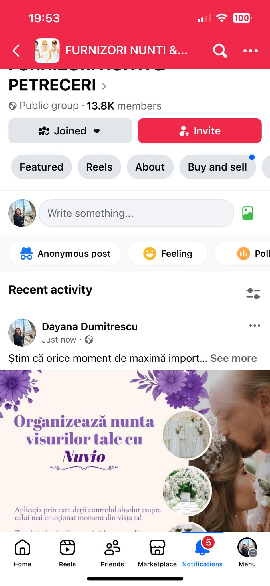
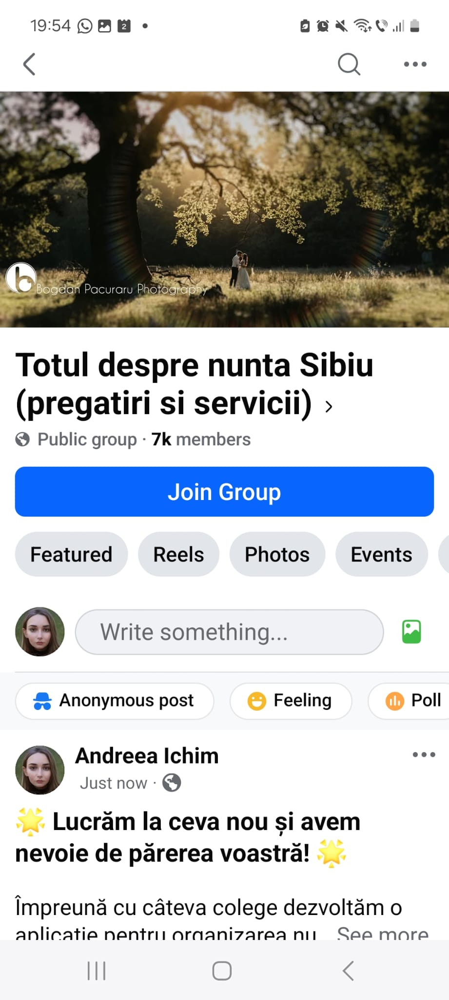
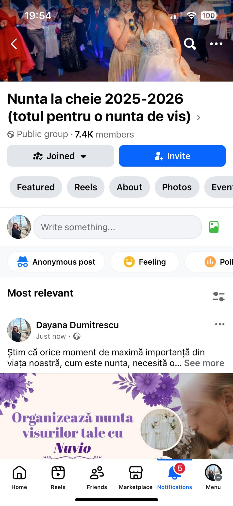
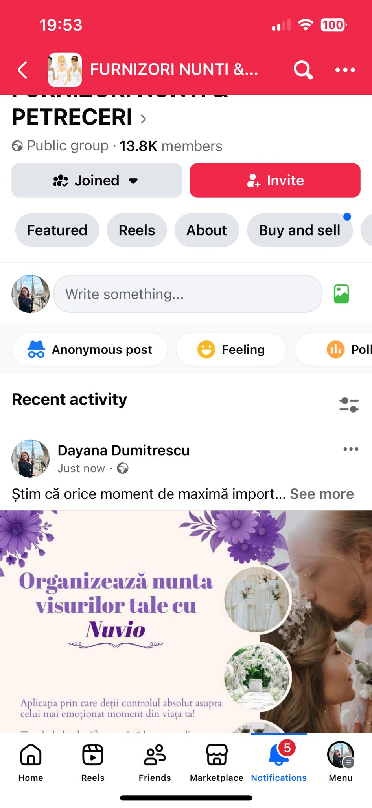
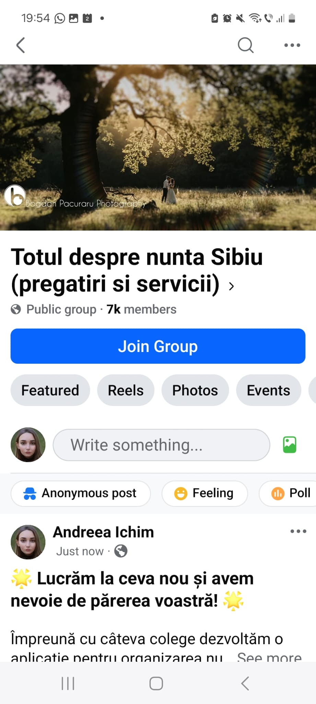
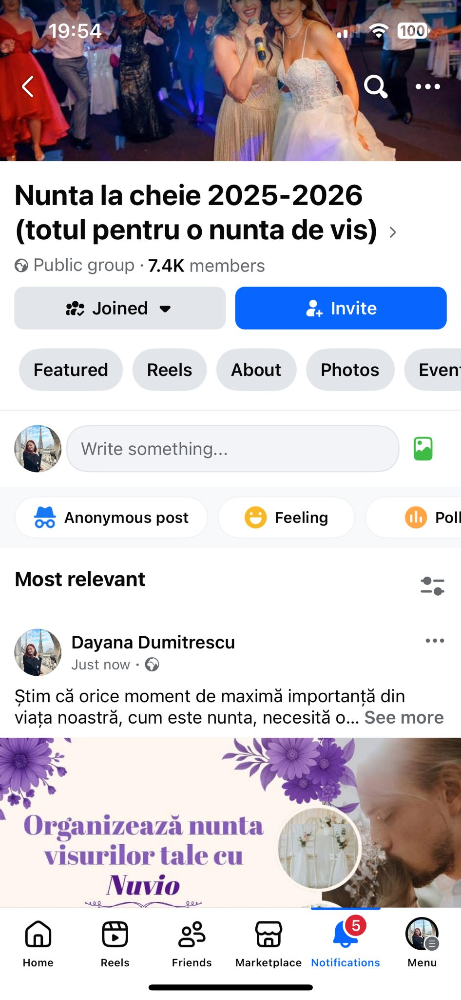
 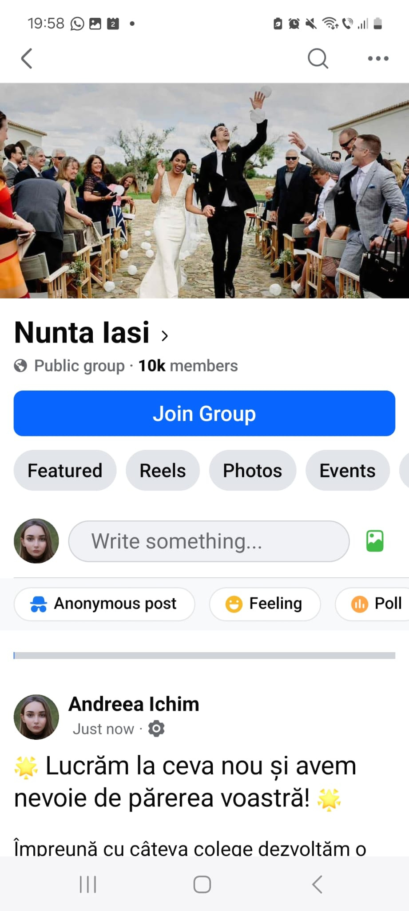
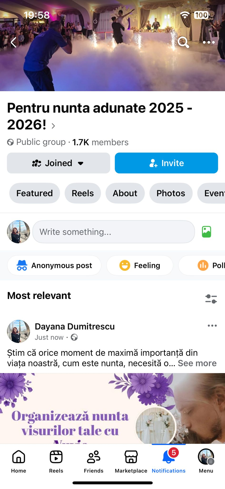
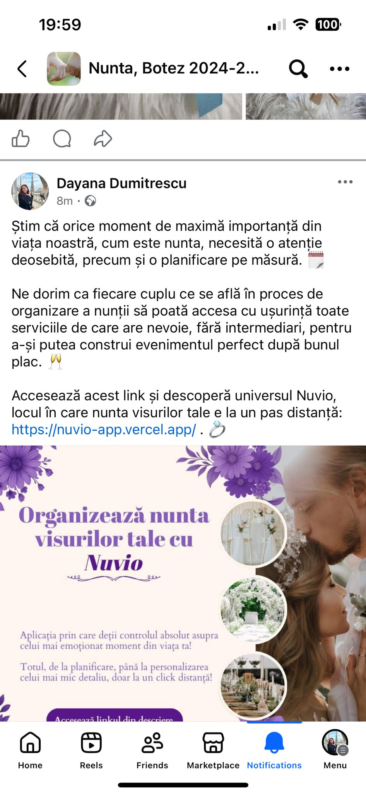
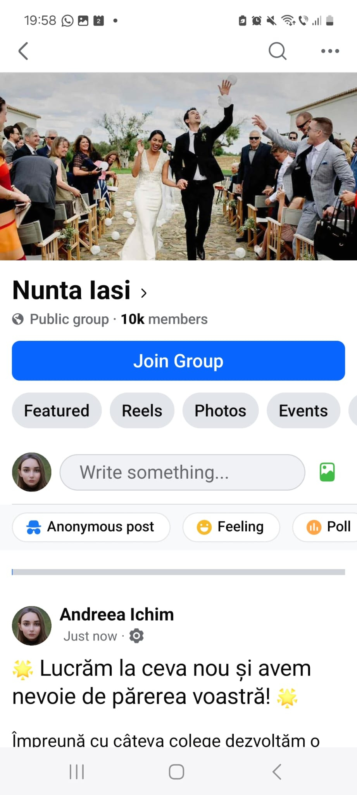
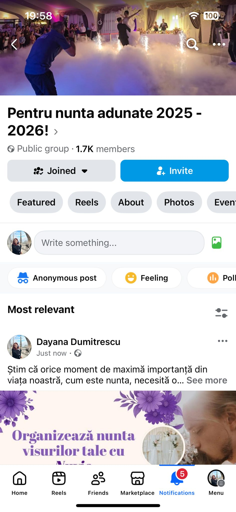
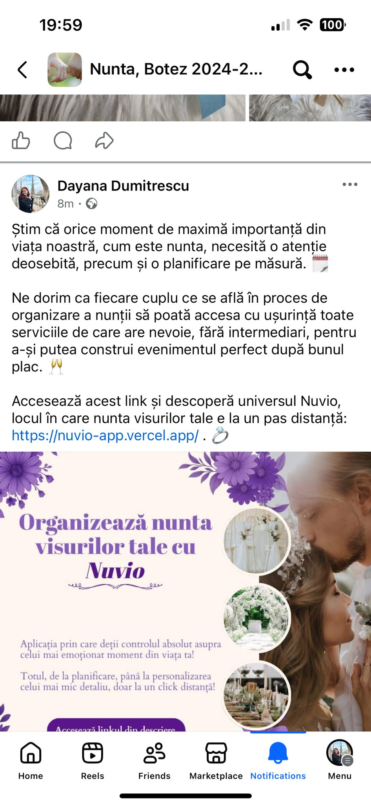
Milestone 6
1. Determinarea mărimii pieței țintă
Pe baza datelor de la Institutul Național de Statistică (INS) și a analizei realizate în Power BI, piața noastră țintă este formată din aproximativ 100.000 de nunți pe an în România (cu variații între 80.000–130.000 în perioada 2019–2024).
Segmentele principale ale pieței sunt:
- Grupe de vârstă: majoritatea mirilor au 25–34 de ani (conform graficului „Average Age Groups”).
- Nivel educație: cele mai frecvente sunt studiile medii, urmate de studiile scăzute și superioare (graficul „Average Weddings by Study Level”).
- Distribuție geografică: număr ridicat de nunți în București, Cluj, Iași, Timișoara, Brașov și Constanța (harta „Average Weddings per Year”).
Estimăm că piața direct abordabilă pentru o aplicație digitală (cupluri din orașe mari, 25–34 ani) este de aproximativ 40.000–50.000 de nunți anual.
2. Competiția de pe piața românească
Piața românească de organizare a nunților este fragmentată și dominată în continuare de agenții clasice de evenimente și furnizori individuali (fotografi, DJ, restaurante, decoratori). Estimăm că există câteva sute de furnizori tradiționali care concurează indirect cu Nuvio, oferind servicii de organizare sau pachete complete.
Pe zona de platforme digitale de planificare, numărul competitorilor direcți este mult mai mic (aprox. 3–5 jucători activi). Dintre cei mai relevanți pentru piața noastră țintă menționăm:
Nuvio se poziționează în aceeași categorie de soluții digitale, dar își propune să integreze mai multe funcționalități într-un singur loc (calendar, buget, invitații digitale, chat cu furnizorii), pentru a oferi o experiență completă atât mirilor, cât și partenerilor.
3. Competition & Estimated Market Share
Piața soluțiilor digitale pentru organizarea nunților din România este în plină dezvoltare, dar numărul competitorilor direcți este redus. Pe baza analizei traficului online, a prezenței în social media și a numărului de furnizori listați, am estimat următoarele ponderi ale principalilor jucători:
| Competitor | Tip | Market Share Estimat |
|---|---|---|
| SmartWedding | Platformă digitală completă pentru organizare | 35–40% |
| WeSmart | Platformă de conectare miri – furnizori | 25–30% |
| Bridal.ro | Listare furnizori & inspirație | 10–15% |
| WeddingMarket / WedMe | Marketplace pentru furnizori de evenimente | 5–10% fiecare |
| MyWed | Platformă internațională pentru fotografi | ~5% |
| Eventbook / Partymap | Marketplace general pentru evenimente | <5% |
În total, piața include între 5 și 7 competitori direcți și peste 200 de competitori indirecți (agenții de evenimente, fotografi, DJ, restaurante, wedding planneri). Nuvio se diferențiază prin integrarea într-o singură platformă a unui sistem complet de comunicare cu furnizorii, calendar, planificare financiară și invitații digitale.
4. Estimated Market Share for Nuvio (5-Year Forecast)
Pentru a estima cota de piață pe care Nuvio o poate obține în următorii cinci ani, am analizat ritmul de creștere al aplicațiilor similare, structura pieței românești și faptul că platformele digitale de organizare sunt încă într-o etapă incipientă. Estimările sunt realiste pentru un startup nou, aflat la început de drum:
| Year | Estimated Market Share | Explanation |
|---|---|---|
| Year 1 | 0.5–1% | Lansare recentă, adopție redusă, brand awareness încă mic. |
| Year 2 | 2–3% | Creștere prin marketing, primele parteneriate cu furnizori. |
| Year 3 | 5–7% | Platforma devine cunoscută în comunitățile de viitori miri. |
| Year 4 | 10–12% | Bază stabilă de furnizori, utilizatori constanți, proces consolidat. |
| Year 5 | 15–18% | Nuvio devine un competitor important în piață. |
5. Total Market Value & Nuvio Market Value (Years 1–5)
Pentru a determina valoarea totală a pieței, am pornit de la numărul de nunți înregistrate anual în România (aprox. 50.000, conform INS). Estimăm că 12% dintre cupluri sunt dispuse să folosească o platformă digitală de organizare, ceea ce reprezintă aproximativ 6.000 potențiali utilizatori anual.
Având în vedere modelul de monetizare prin abonamente și comisioane, am estimat un venit mediu de 20 € per nuntă, ceea ce duce la o valoare totală a pieței de:
≈ 120.000 € / an
Pe baza estimărilor de market share din anii 1–5, valoarea pieței captată de Nuvio este:
| Year | Market Share | Value (€) |
|---|---|---|
| Year 1 | 0.5–1% | 600 – 1,200 € |
| Year 2 | 2–3% | 2,400 – 3,600 € |
| Year 3 | 5–7% | 6,000 – 8,400 € |
| Year 4 | 10–12% | 12,000 – 14,400 € |
| Year 5 | 15–18% | 18,000 – 21,600 € |
Aceste valori indică faptul că, deși piața este relativ mică, există un potențial real de creștere pentru o platformă centralizată precum Nuvio, mai ales pe termen mediu și lung, prin extinderea bazei de furnizori și creșterea vizibilității în rândul viitorilor miri.
Milestone 7
Introducere MVP
În cadrul acestui milestone am dezvoltat un Minimum Viable Product (MVP) al platformei Nuvio. MVP-ul reprezintă o versiune funcțională, dar simplificată, a produsului final, având ca scop validarea ideii și a interesului utilizatorilor pentru o platformă de organizare a nunților.
Scopul acestui MVP nu este oferirea tuturor funcționalităților planificate, ci demonstrarea valorii de bază a produsului și obținerea de feedback real din partea utilizatorilor.
Problema adresată de MVP-ul Nuvio
Organizarea unei nunți presupune mult timp pierdut căutând furnizori, comparând oferte și gestionând informații din surse diferite. Pe lângă dificultatea identificării furnizorilor potriviți, cuplurile se confruntă și cu probleme legate de organizarea bugetului, planificarea activităților și gestionarea colaborărilor.
MVP-ul Nuvio adresează aceste probleme prin centralizarea furnizorilor și a procesului de organizare a nunții într-o singură platformă ușor de utilizat, oferind instrumente dedicate pentru planificare, colaborare și gestionarea informațiilor esențiale.
Funcționalități incluse în MVP
MVP-ul Nuvio include următoarele funcționalități:
- Landing page de prezentare a platformei
- Sistem de autentificare și înregistrare a utilizatorilor
- Două tipuri de conturi: cont personal și cont furnizor
- Secțiune de explorare a furnizorilor, împărțiți pe categorii. În cadrul MVP-ului am inclus următoarele tipuri de furnizor: restaurante, fotografi, DJ, florării, cofetării
- Profil personal pentru utilizatori, cu informații de bază despre nuntă și despre furnizorii aleși
- Posibilitatea utilizatorilor de a vizualiza detalii despre furnizori, de a adăuga furnizori la favorite și de a trimite cereri de colaborare
- Vizualizarea și gestionarea cererilor de colaborare trimise de utilizatori, precum și a colaborărilor active
- Gestionarea bugetului nunții prin adăugarea de cheltuieli personalizate sau cheltuieli sugerate cu valori editabile
- Calendar al nunții pentru adăugarea și organizarea task-urilor. Acesta este disponibil atât pentru utilizatorii normali, cât și pentru furnizori.
- Crearea invitațiilor de nuntă prin intermediul aplicației. Pentru acest MVP am creat un singur model standard de invitație.
- Posibilitatea mirilor de a vizualiza furnizorizorii cu care lucrează.
- Profil dedicat pentru furnizori în care aceștia pot să-și prezinte serviciul oferit.
- Posibilitatea de a vizualiza cererile de colaborare, de a le accepta sau refuza și de a gestiona colaborările active.
- Vizualizarea detaliilor colaborărilor active de către furnizori, incluzând numele utilizatorului, datele de contact, data și locația evenimentului
- Secțiune de contact prin care atât utilizatorii, cât și furnizorii pot transmite mesaje echipei Nuvio în cazul unor întrebări sau neclarități
Descriere amplă a funcționalităților
1. Landing Page – Prima interacțiune cu utilizatorul
Aplicația se deschide cu un landing page de prezentare prin care utilizatorul poate afla rapid ce face aplicația și ce beneficii oferă.
Pe landing page este prezent un buton principal, „Descoperă acum”, care invită utilizatorul să exploreze mai departe platforma.
Landing Page – prima interacțiune cu utilizatorul
2. Explorarea furnizorilor
După accesarea butonului „Descoperă acum”, utilizatorul este redirecționat către pagina de explorare a furnizorilor. Aceasta reprezintă funcționalitatea centrală a MVP-ului.
Pentru această etapă am ales să includem doar cele mai importante categorii de furnizori necesari pentru organizarea unei nunți:
- Restaurante
- Fotografi
- DJ
- Florării
- Cofetării
Utilizatorul poate naviga prin aceste categorii, poate vizualiza furnizorii disponibili și poate accesa detalii despre fiecare.
Pagina de explorare a furnizorilor
Funcționalitatea de adăugare a unui furnizor la favorite este disponibilă doar pentru utilizatorii autentificați, pentru a încuraja crearea unui cont și a păstra datele relevante asociate fiecărui utilizator.
3. Autentificare și creare cont
Platforma oferă două opțiuni principale pentru gestionarea conturilor: autentificare pentru utilizatorii existenți și creare de cont pentru utilizatorii noi.
Creare cont personal / furnizor
În cadrul procesului de creare cont, utilizatorul poate alege între două tipuri de cont:
- Cont personal – destinat cuplurilor care își organizează nunta
- Cont furnizor – destinat furnizorilor de servicii pentru nunți
Pentru ambele tipuri de cont sunt solicitate informații de bază precum: nume, număr de telefon, adresă de email și parolă. În cazul contului de furnizor, este necesară și selectarea categoriei din care face parte acesta.
4. Contul personal al utilizatorului
După autentificare, utilizatorul are acces la propriul profil personal. Acesta include secțiuni dedicate precum: furnizori favoriți, calendarul nunții, buget, invitații, colaborări și cereri de colaborare.
În cadrul MVP-ului, funcționalitățile principale ale contului personal sunt implementate și funcționale, permițând utilizatorului să gestioneze activ procesul de organizare a nunții.
Profil utilizator
5. Contul furnizorului
Contul de furnizor permite gestionarea informațiilor publice care vor fi afișate în cadrul paginii de explorare. Furnizorii pot adăuga:
- descrierea serviciilor oferite
- orașul și adresa
- website-ul (dacă există)
- imagini de la evenimente anterioare
Furnizorii pot gestiona cererile de colaborare primite, le pot accepta sau refuza și pot vizualiza colaborările active. De asemenea, aceștia dispun de un calendar în care pot adăuga evenimentele și task-urile asociate acestora.
Profil furnizor
6. Furnizori favoriți
Utilizatorul poate adăuga furnizori la lista de favorite pentru a-i accesa rapid ulterior. Furnizorii favoriți sunt organizați pe categorii, la fel ca pagina de explorează, iar utilizatorul are posibilitatea de a elimina oricând un furnizor din această listă.
Lista furnizorilor favoriți
7. Calendar nuntă
Platforma include un calendar dedicat organizării nunții, în care utilizatorul poate adăuga task-uri specifice. Acesta poate naviga între luni și poate vizualiza activitățile planificate pentru fiecare zi.
Calendarul nunții
8. Gestionarea bugetului
Utilizatorul poate gestiona bugetul nunții prin adăugarea cheltuielilor. Acesta poate introduce cheltuieli personalizate sau poate folosi sugestii de cheltuieli cu sume standard, care pot fi editate în funcție de necesități. De asemenea cheltuielile pot fi eliminate din listă. Prin intermediul acestei funcționalități utilizatorul poate să vadă cât cheltuie.

Gestionarea bugetului
9. Crearea invitațiilor
Aplicația permite crearea invitațiilor de nuntă direct din platformă. În cadrul MVP-ului este disponibil un singur model standard de invitație, în care utilizatorul poate completa numele mirilor, numele naților, data, locația și un mesaj personalizat.
Pe viitor, vor fi adăugate mai multe template-uri de invitații și opțiuni avansate de personalizare.
Model standard de invitație
10. Cereri de colaborare și colaborări
Platforma permite gestionarea cererilor de colaborare dintre utilizatori și furnizori. Utilizatorii pot trimite cereri de colaborare către furnizorii doriți direct din pagina de detalii a acestora.
În cadrul profilului personal, utilizatorii pot vizualiza cererile trimise și colaborările active, în funcție de statusul acestora.
Furnizorii au acces la o secțiune dedicată cererilor de colaborare, unde pot accepta sau refuza solicitările primite. În cazul acceptării, colaborarea devine activă și este vizibilă în contul ambelor părți.
Cereri de colaborare - utilizator
11. Secțiunea Contact
Aplicația include o secțiune de contact prin care atât utilizatorii, cât și furnizorii pot lua legătura cu echipa Nuvio.
Prin intermediul acestui formular, utilizatorii pot transmite întrebări, feedback sau pot solicita clarificări legate de funcționalitățile platformei.
Formular contact
Concluzie
MVP-ul Nuvio demonstrează fezabilitatea ideii și interesul pentru o platformă de organizare a nunții. Versiunea actuală oferă suficientă valoare pentru utilizatori și reprezintă o bază solidă pentru dezvoltarea ulterioară a produsului.
Milestone 8 – First Sale & MVP Usage Validation
1. Obiectivul Milestone-ului
Obiectivul Milestone-ului 8 a fost să aducem MVP-ul Nuvio în utilizare reală și să validăm interesul utilizatorilor pentru produs. Această etapă urmărește confirmarea faptului că utilizatorii sunt dispuși să folosească aplicația și să o recomande, ca indicator preliminar pentru viitoare conversii în clienți plătitori.
Validarea a fost realizată prin distribuirea MVP-ului către utilizatori reali, monitorizarea utilizării aplicației și colectarea de feedback structurat.
2. Distribuția MVP-ului
MVP-ul a fost distribuit prin canale informale, dar relevante pentru publicul țintă:
- grupuri de WhatsApp cu persoane interesate de organizarea unei nunți
- Instagram Stories postate de membrii echipei
Utilizatorii au fost invitați să testeze aplicația și să completeze un formular de feedback scurt (sub 2 minute), pentru a evalua experiența de utilizare.
3. Dovezi distribuție MVP
4. Utilizare reală
Pentru a demonstra utilizarea reală a MVP-ului, a fost integrat PostHog, care permite monitorizarea activității utilizatorilor în timp real.
Datele colectate confirmă accesarea aplicației de către utilizatori reali, înregistrând evenimente precum first visit, page view și session start.
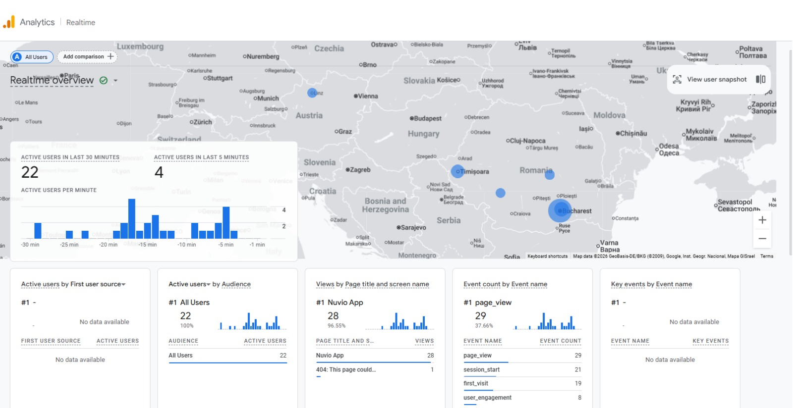5. Feedback-ul utilizatorilor
În urma distribuției MVP-ului, au fost colectate 28 de răspunsuri valide prin formularul de feedback. Feedback-ul a fost preponderent cantitativ, folosind scale de evaluare de la 1 la 5.
Satisfacția generală
82,1% dintre respondenți au acordat nota maximă (5) experienței oferite de platformă, iar 17,9% au oferit nota 4. Nu au fost înregistrate evaluări negative.
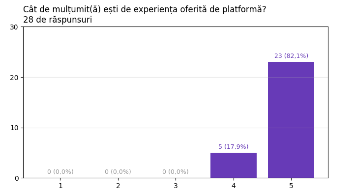Probabilitatea de recomandare
78,6% dintre utilizatori au declarat că ar recomanda cu mare probabilitate aplicația Nuvio unui prieten, iar 21,4% au oferit nota 4.
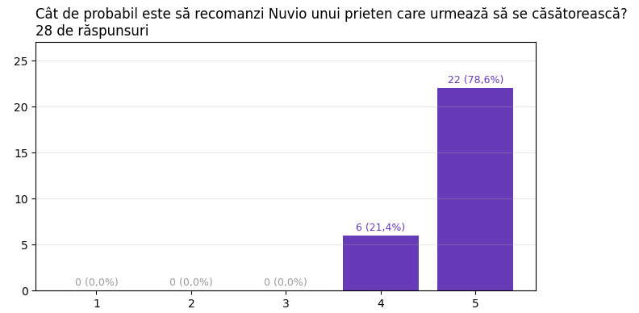Ușurința utilizării
71,4% dintre respondenți consideră că găsirea și filtrarea furnizorilor este foarte ușoară, restul evaluând această funcționalitate cu note de 3 și 4.

Utilitatea platformei
82,1% dintre utilizatori consideră platforma foarte utilă pentru planificarea unei nunți, confirmând valoarea soluției propuse.
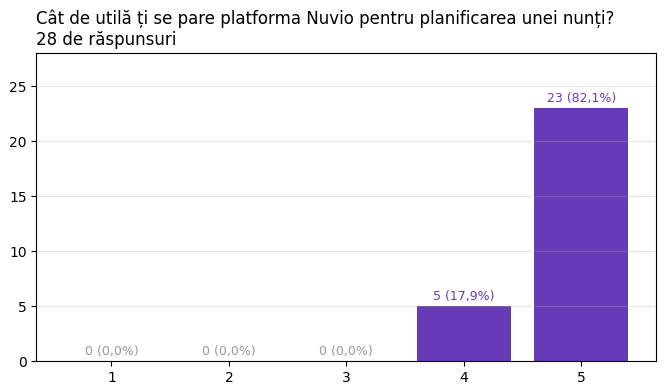6. Funcționalități apreciate
Utilizatorii au indicat următoarele funcționalități ca fiind cele mai utile:
- Explorarea furnizorilor – 46,4%
- Gestionarea colaborărilor – 14,3%
- Gestionarea bugetului – 14,3%
- Calendarul de task-uri – 14,3%
- Crearea invitațiilor – 10,7%
7. Concluzie – First Sale Validation
Milestone-ul 8 demonstrează că MVP-ul Nuvio este utilizat de utilizatori reali și că există un interes clar pentru soluția propusă. Nivelul ridicat de satisfacție, probabilitatea mare de recomandare și datele din Google Analytics confirmă validarea inițială a produsului.
Această etapă reprezintă o bază solidă pentru testarea unor funcționalități premium și pentru implementarea unui model de monetizare în milestone-urile următoare.